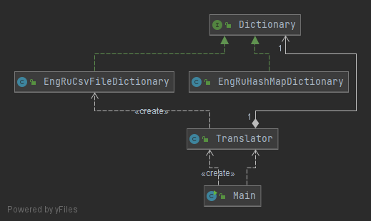

FOR SOME TIME the company was using the configuration for a dictionary file only internally, BUT it was recognized as a great feature which can improve user experience. Thus, we have to provide users with the ability to set up their own dictionary file and use it.
Structurally our application didn't change
